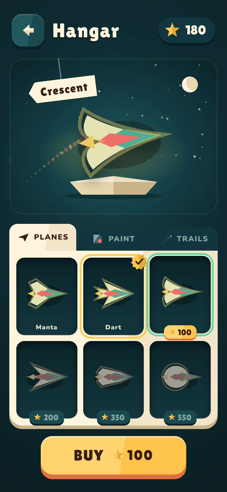
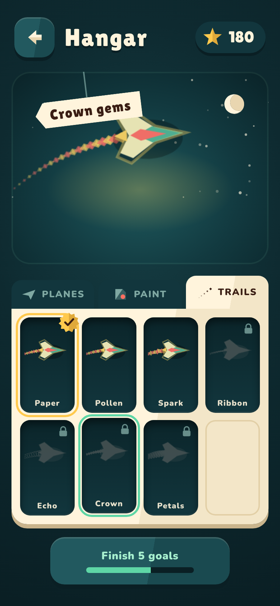
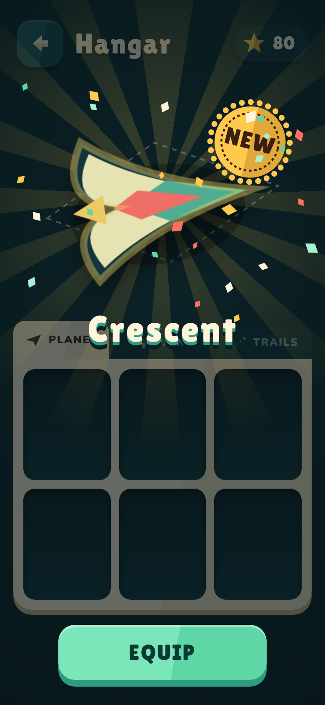
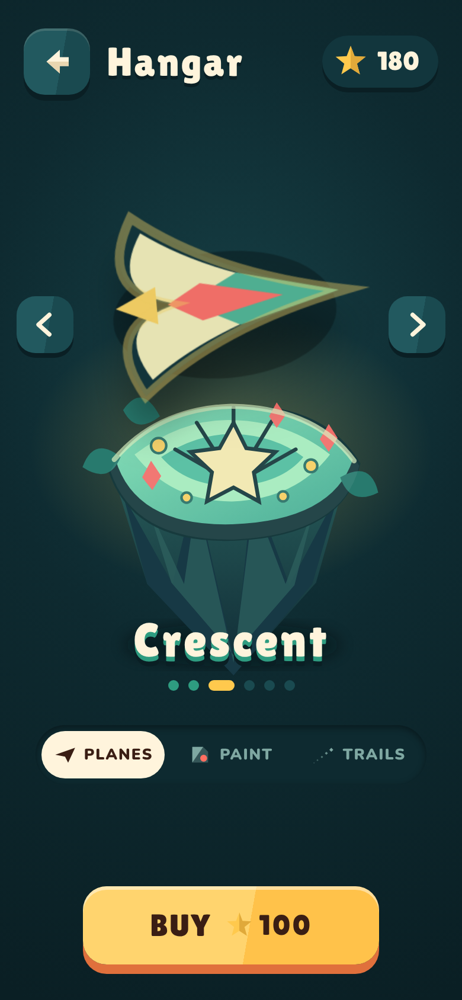
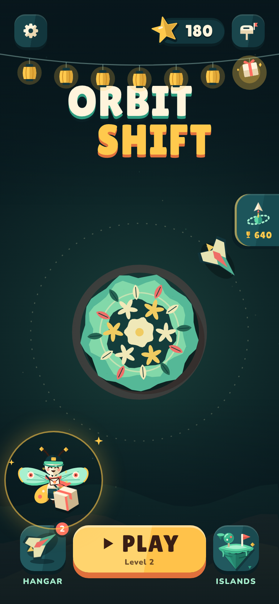
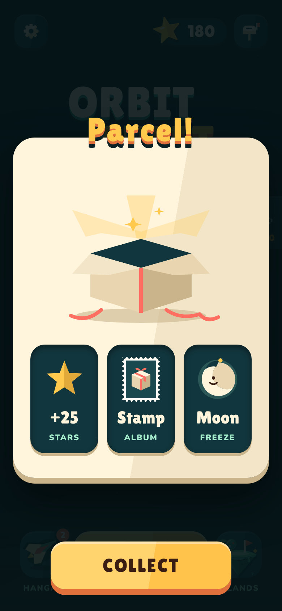
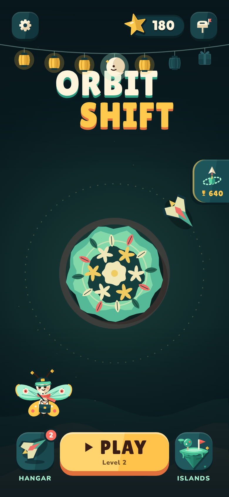
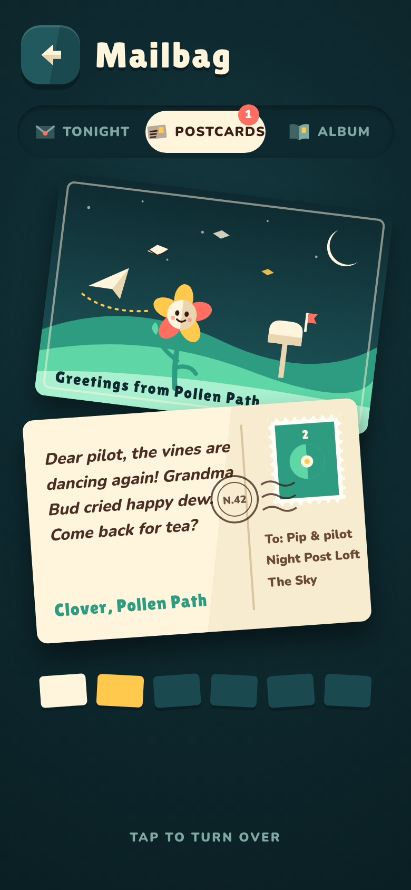
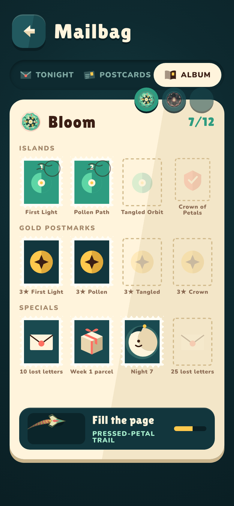

Real ship and trail art from the game (drawGlider, drawTrailPiece). 390×844.

A · Sorting Room · PlanesRECOMMENDEDPip's mail-sorting rack. Tap any slot to preview it on the stand, even locked ones. One big button changes: Buy · Equip · Equipped.
A · Trails, locked one previewedEvery trail and paint gets a name. A locked item shows its silhouette; tapping it previews it and the button shows how to earn it, with progress.
A · Buying a planeThe plane unfolds out of its crease, a gold NEW postmark stamps down (same family as PERFECT), paper confetti, then Equip.
B · Island Dock carouselOne plane at a time on a floating island, swipe or arrows. Simpler and bigger, but you can't compare items or see what's left.All told through the Night Post. Composited on the real Home.

Night 7 · Pip brings the parcelThe 7th lantern (the parcel) glows. Pip holds it, ringed in gold. No text: tap Pip.
The parcel opensSame every week, no lottery: +25 stars, a stamp for the album, and a Paper Moon if you don't hold one.
Missed a night · the Paper MoonThe moon hangs in the missed slot and your lanterns stay lit. Without a moon, lanterns dim instead of vanishing; fly tonight to relight them.
Islander postcardsRewards arrive as postcards from the folk you helped. One handwritten line each: the story drips in, 5 seconds at a time.
Stamp AlbumA page per island: level stamps, gold postmarks (3★), specials. Empty slots show what goes there. A full page gives a trail. No expiry, no duplicates, no packs.